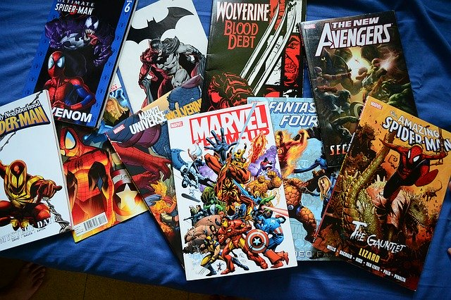

Cu ajutorul unchiului său, Robbie Solomon,, Lee a devenit asistent în 1939 la noua divizie Timely Comics a revistelor de ficțiune și cărților cu benzi desenate din cadrul companiei lui Martin Goodman, care mai târziu, prin anii 1960, urma să evolueze în Marvel Comics. A fost angajat oficial de către editorul de la Timely, Joe Simon. Lee s-a alăturat Armatei Statelor Unite în 1942 și a servit ca membru în divizia de Signal Corps, reparând echipamente de comunicații . Datorită laturei sale artistice, Stan a fost transferat în Divizia de Film, unde a scris manuale, filme de instruire, sloganuri, desene animate. Când s-a întors din serviciul militar al celui de-al Doilea Război Mondial, și-a reluat sarcinile de benzi desenate la Atlas Comics ( un rebranding al Timely Comics, urmând să devină mai târziu Marvel). Lee a fost introdus în Asociația Regimentală a Corpului de Semnal, primind distincția de membru de onoare al Batalionului 2 al Regimentului 2 al Infanteriei S.U.A în 2017 la Convenția Emerald City Comic Con .
Pe la mijlocul anilor 1950, în cadrul companiei Atlas Comics, deja cunoscută sub acest nume, Lee a scris povești bazate pe diferite genuri, romanță, western, ficțiune, suspans. Pentru a produce banda de ziar, "My Friend Irma", având-o în rol principal pe Marie Wilson, Stan Lee a făcut echipă alături de colegul său, Dan DeCarlo.
Pe la sfârșitul anilor '50, ca răspuns la avântul ce-l luase concurența de la Dc Comics prin crearea serialelor de benzi desenate Flash și Justice League of America, primește, în sfârșit, o însărcinare demnă de talentul său, și anume să creeze personaje noi, de succes, pentru editorul Martin Goodman (editura Marvel Comics). În această încercare, Stan are curajul de a umaniza personajele sale, ieșind din tiparele de succes de până atunci, idealizate, precum Super-Man, căruia nimeni și nimic nu-i putea sta în cale. Tocmai acest fler al lui a fost cheia succesului. Oamenii doreau personaje mai apropiate de viața de zi cu zi, de necazurile și bucuriile cetățeanului normal. Așa se nasc personaje precum: Fantastic Four, Incredible Hulk, X-Men(împreună cu desenatorul Kirby), sau Doctor Strange și „Spider-Man” (împreună cu desenatorul Steve Ditko). Spider-Man a apărut pentru prima oară în revista Amazing Fantasynr. 15, editura Marvel Comics, în luna august 1962 și a avut un succes enorm. Urmarea este cunoscută de toată lumea, s-au scris cărți, benzi desenate, s-au turnat filme cu Omul-Păianjen, cu distribuții fabuloase.
În anul 1972 îi urmează lui M. Goodman la conducerea editurii Marvel Comics. Este activ și pe plan social, la rugămintea Ministerului American al Educației și Sănătății a luat poziție împotriva consumului de droguri. În 1981 a creat o campanie de filme și o televiziune în California. Cu avocatul Peter Paul a creat la mijlocul anilor '90 o companie media, Stan Lee Media, cu un succes deosebit. La sfârșitul anului 2000 se dovedește însă că Peter Paul a fraudat compania comună, aceasta dând faliment.
Din 2005 are propria companie de film, Pow-Purveyors of Wonder Entertainment.